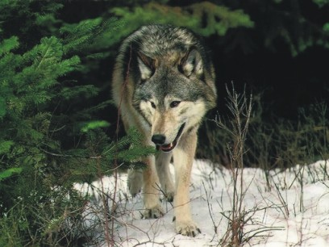
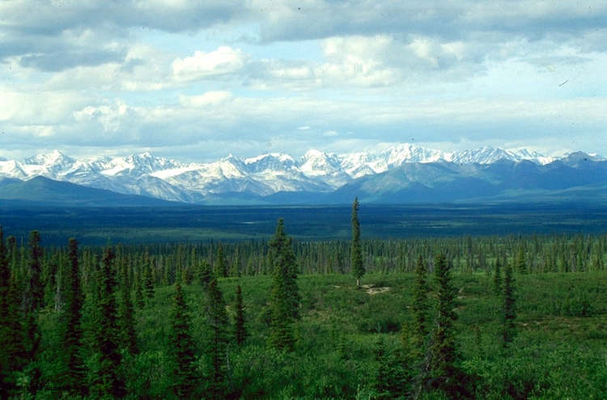

TAJGAJest to biom po³o¿ony w pó³nocnej czêœci Europy, Azji i Ameryki Pó³nocnej, w klimacie umiarkowanym ch³odnym. Porasta go g³ównie las iglasty, choæ ze wzglêdu na utrudniony odp³yw wody spowodowany na niektórych obszarach wieczn¹ zmarzlin¹ wystêpuj¹ tu tereny bagienne. Wyró¿niamy tajgê ciemn¹ (gêst¹, poroœniêt¹ wysokimi gatunkami drzew iglastych, z bogatym runem) i jasn¹ (rzadziej poroœniêt¹ ni¿szymi gatunkami drzew, z ubogim runem). Klimat: krótkie, dosyæ ciep³e lato i d³uga, mroŸna i œnie¿na zima Roœlinnoœæ: œwierki, jod³y, sosny, modrzewie, limby Zwierzêta: niedŸwiedzie, wilki, ³osie, borsuki, rosomaki, rysie, ³asice, renifery  |
 |